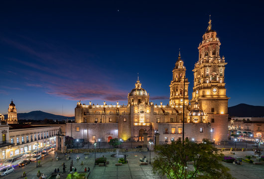

Michoacán de Ocampo es un estado ubicado en el occidente de México, conocido por su rica herencia cultural y natural. Su capital es Morelia, una ciudad colonial famosa por su arquitectura barroca y su historia. Michoacán cuenta con una geografía variada que incluye costas en el Océano Pacífico, montañas, y valles fértiles. El estado es notable por su biodiversidad y sus parques naturales, así como por su historia de influencias indígenas y coloniales. Es un importante centro de producción agrícola, con cultivos de aguacate, caña de azúcar y maíz.
Michoacán es famoso por la celebración del Día de los Muertos, especialmente en la región de Patzcuaro. Durante esta festividad, las comunidades locales se reúnen en los cementerios para rendir homenaje a los difuntos, decorando tumbas con flores de cempasuchil y preparando altares con ofrendas. Otra tradición significativa es la celebración de la Noche de los Libros en Morelia, donde se organizan eventos culturales, lecturas y actividades para fomentar la lectura y la cultura literaria. También destaca la Feria de la Uva y del Vino en la región de Zamora, que celebra la producción vitivinícola local con eventos y degustaciones.
La cocina de Michoacán es diversa y rica en sabores. Uno de los platillos más representativos es la mole de olla, una sopa espesa hecha con carne de res, maíz, calabazas y chiles. Otro platillo destacado es la carnitas, carne de cerdo cocida lentamente en su propia grasa hasta que queda tierna y crujiente, servida en tacos con cebolla y cilantro. Los * uchepos* son también típicos, una especie de tamal hecho de maíz tierno, a menudo acompañado con crema y queso fresco.
| Dato de interés | Dato de interés | Dato de interés |
|---|---|---|
| Michoacán es conocido por ser uno de los principales productores de aguacate en México, con la región de Uruapan siendo un importante centro de cultivo. El aguacate michoacano es apreciado por su calidad y sabor. | El estado alberga el Parque Nacional Lago de Pátzcuaro, una importante reserva natural que incluye el Lago de Pátzcuaro y varias islas, como la Isla de Janitzio. El parque es conocido por su belleza escénica y sus actividades de ecoturismo. | Michoacán es el lugar de origen del famoso "Danza de los Viejitos", una danza tradicional que se realiza durante las festividades y eventos culturales. Los danzantes se visten con máscaras y disfraces de ancianos, realizando movimientos que simbolizan la sabiduría y la vitalidad en la cultura purépecha. |